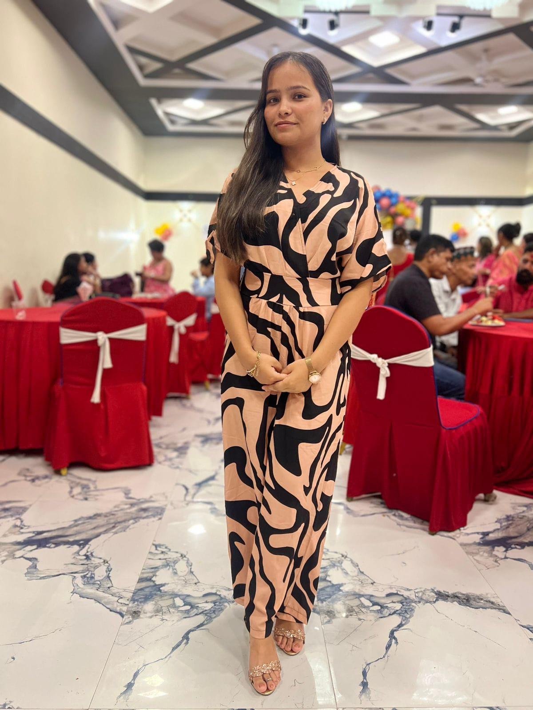

Hello! I'm Ramila Khatri, a passionate web developer and UI/UX design learner.
I enjoy creating modern, responsive, and user-friendly websites using HTML,
CSS, and JavaScript.
I am continuously improving my frontend development skills while exploring
backend technologies to become a Full Stack Developer. I believe in writing
clean, organized code and creating designs that are both visually appealing
and easy to use.
Beyond coding, I enjoy learning new technologies, working on personal projects,
and challenging myself with real-world development tasks. My goal is to grow
as a developer, contribute to innovative projects, and build digital solutions
that create a positive impact.
BSc (Hons) Computing
Biratnagar International College
Web Development
UI/UX Design
Learning New Technologies
I started my journey by learning HTML and CSS. As I progressed, I explored JavaScript, Python, MySQL, and UI/UX design using Figma. My goal is to become a skilled Full Stack Developer and build impactful web applications.